结论：缩量阴跌、创新低，3623 未破 → 仍是下跌中枢震荡，总仓 ≤4 成、少动多看。 上证收 3577.62（-0.28%），最低 3547.94 创 60 日新低； 跌家 4876（87%）、两市 13,146 亿（-4.74%）缩量阴跌。 二类热点国产算力当日转凉（篮子 -3.01%）。池内 8 只全部无方法买点； 唯一亮点中芯国际 +6.21% 站上 120.6，但仍缺回抽确认。
老师五条判据逐条核：① 「各大指数均出现下跌」 —— 上证 -0.28%、深成 -0.71%、创业板 -0.79% ✓，但科创50 +1.83%、沪深300 +0.03% 逆势（见偏差记录）；② 「1 分钟下跌中枢延伸，走势没出底背驰」 —— 老师口径，日线不复算；③ 「深成指向下破的幅度很浅」 —— 深成最低 10505.84 已是 60 日新低；④ 「创业板指数没有创新低，维持震荡，指数没见底」 —— 创业板最低 2271.99 > 11/17 低 2263.74 ✓ 成立；⑤ 「等震荡向上需要突破压力 3623 点后出分型回抽确认」 —— 3623.12 即 11/16 高点，今日最高 3584.28，差 38.84 点，未触及。
结构是缩量阴跌、宽度极差：跌 4876 家占 87%，跌超 5% 732 家、跌超 9% 141 家，跌停 68 家；两市 13,146 亿环比 -4.74%。正是老师提醒的「防范走势缩量向下转阴跌」形态 —— 底背驰未出前不抢低点。
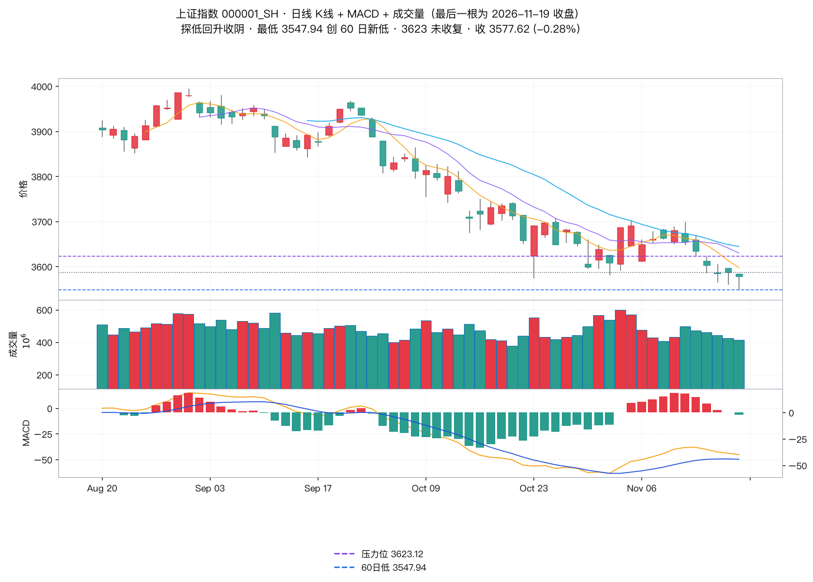
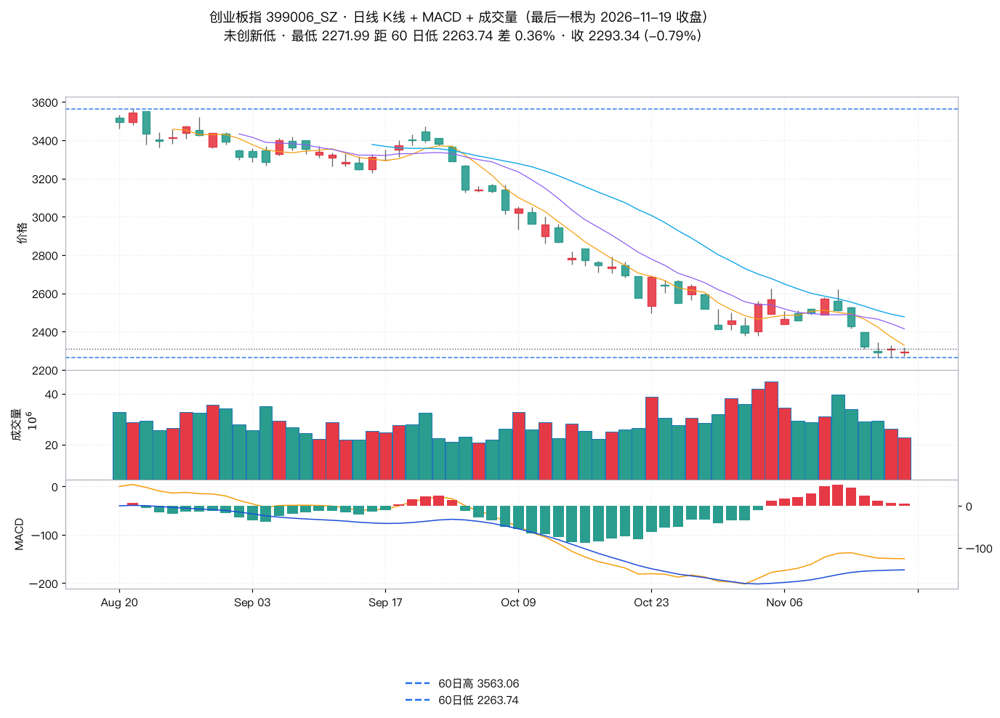
| 方向（自建篮子） | 老师口径 | 实测（均值 · 涨跌家数 · 个股） |
|---|---|---|
| 国产算力 | 二类热点 ·「有点要凉的迹象」 | -3.01%（3 涨 4 跌）；拓维信息 -9.35%、常山北明 +4.83%、四川长虹 +1.41% |
| 算力租赁/IDC | 「内部也出现分化，表现比较弱」 | -7.39%（0 涨 6 跌）；光环新网、数据港、奥飞数据全跌 |
| 高股息红利 | 「高股息红利方向有分化」 | +0.02%（3 涨 3 跌）；银行 +0.41%、电力 +0.22%、煤炭/石油 -0.41% |
| AI视频/传媒 | 「前期强势股还在延续补跌」 | -4.48%（0 涨 6 跌）；昨日涨停 40 只今日跌 21 只、跌超 5% 11 只 |
| 半导体 | （对照） | -0.25%（2 涨 4 跌）；中芯国际 +6.21%、瑞芯微 -4.12%，权重与题材反向 |
三条要记的：① 国产算力「有点要凉」当天兑现 —— 篮子 -3.01%（3 涨 4 跌），内部分化极端：常山北明放量 +4.83%、四川长虹放量 +1.41%、拓维信息直接 -9.35%；② 「前期强势股延续补跌」成立 —— 昨日涨停 40 只，今日跌 21 只、跌超 5% 11 只（爱仕达 -10.04%、泰嘉股份 -9.98%、双环科技 -9.90%）；③ 红利是分化不是普跌 —— 银行 +0.41%、电力 +0.22% 红，煤炭/石油 -0.41% 绿，节奏与指数相反。
| 标的 / 题材 | 收盘 | 老师定性（老师口径） | 关键位 | 实测印证（日线触达） | 动作 |
|---|---|---|---|---|---|
| 药明康德 | 144.39 (+0.19%) | 不操作 · 等向上突破 157.8 出 15 分钟底分型三买 | 157.8 | 收在全天最高 144.39，低 140.87 未破昨低 139.75；距 157.8 差 13.41 元；量比 74% 缩量 | 等 |
| 中国船舶 | 34.70 (-0.03%) | 不操作 · 走势相对抗跌，等突破 36.75 出 15 分钟底分型回抽确认 | 36.75 | 全市场 87% 下跌日里几乎平盘 -0.03%；最高 34.80，距 36.75 差 1.95 元；量比 74% | 等 |
| 瑞芯微 | 189.43 (-4.12%) | 不操作 · 激进等日线有力度底分型+小共振中枢；稳健等突破上沿出日线三买 | 220.7 | 低 187.87 破昨低 192.76，续创新低；底分型未出，距 220.7 差 31.27 | 等 |
| 伊利股份 | 32.91 (+1.61%) | 不操作 · 延续上涨不追涨，观察是否出顶背驰，自行参与者设好止损 | — | 高 33.10 创 60 日新高，收 32.91 +1.61%；量比 129%；昨给 31.96 顶背驰位今日未触 | 不追 |
| 海天瑞声 | 87.31 (-4.36%) | 不操作 · 等 15 分钟二买止跌信号 | 141 | 低 86.50 破昨低 89.80，破位延续；距 60 日低 76.54 还有 14.1% | 等 |
| 兆易创新 | 218.81 (-0.34%) | 不操作 · 稳健等收复 233 后回抽三买；激进等突破 224.6 出 15 分钟底分型回抽 | 233 / 224.6 | 高 220.88，距 224.6 差 3.72、距 233 差 12.12 元；低 212.59 逼近 60 日低 212.00 未破；量比 78% | 等 |
| 华丰科技 | 99.27 (-4.64%) | 不操作 · 等日线出顶分型回调后的 15 分钟二买止跌 | — | 低 94.30 破昨低 88.38；成交 33.8 亿；无顶分型 | 等 |
| 中芯国际 | 122.25 (+6.21%) | 不操作 · 需对 120.6 突破出回抽三买（老师口径：下午未满足） | 120.6 / 117.3 | 高 122.65、收 122.25 均站上 120.6，117.3 亦突破；量比 180% 放量 | 等回抽 |
| 常山北明 | 13.03 (+4.83%) | 涨停次日放大量，短线容易遇阻回落 | — | 额 22.7 亿 = 昨 2.46 倍；高 13.50 收 13.03 冲高回落 | 不追 |
| 拓维信息 | 22.30 (-9.35%) | 今日大幅调整，走势起不来 | — | -9.35% 近跌停，缩量（0.77 倍）下跌 | 回避 |
| 四川长虹 | 5.76 (+1.41%) | 放大量，短线也不一定能起来 | — | 额 22.4 亿 = 昨 3.79 倍；涨幅由昨日涨停收窄至 +1.41% | 不追 |
三条要记的：① 池子变了 —— 海天瑞声由短线升中线，新增短线华丰科技、中芯国际，模塑科技、长盈精密维持剔除；② 8 只全部「无方法买点」= 没有进场信号，只剩触发条件，别把「条件」读成「可以试」；③ 池内唯一近端触发点是中芯国际：老师给的 120.6 突破位今日已具备（收 122.25），差一步的是回抽确认。
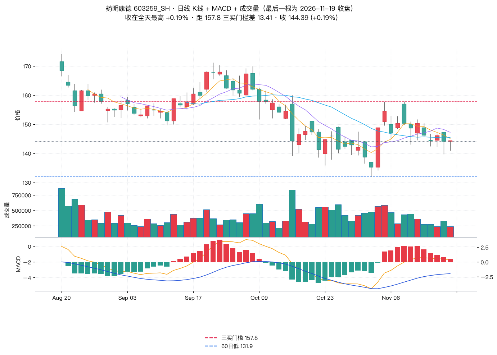
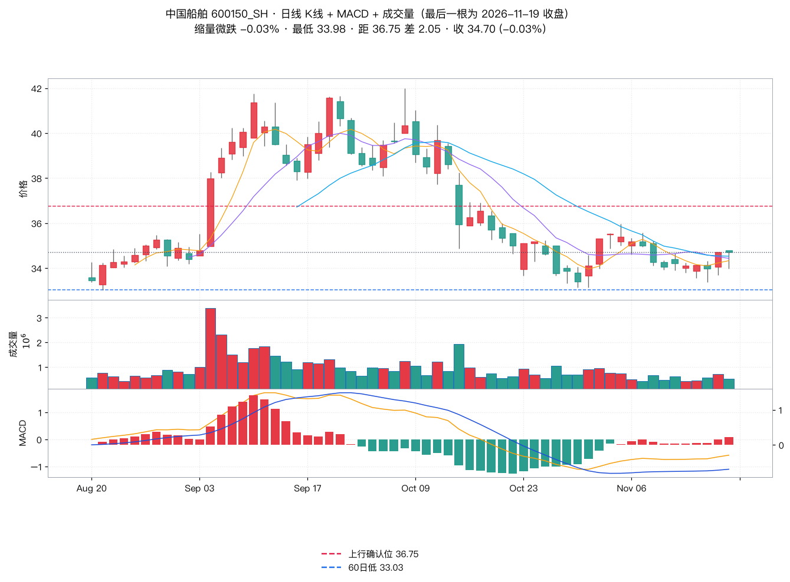
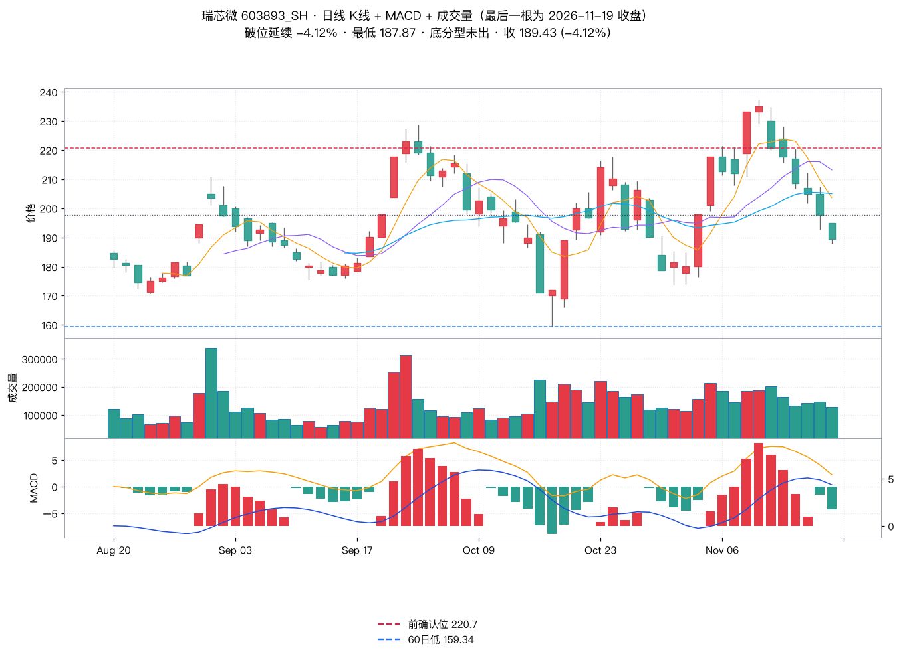
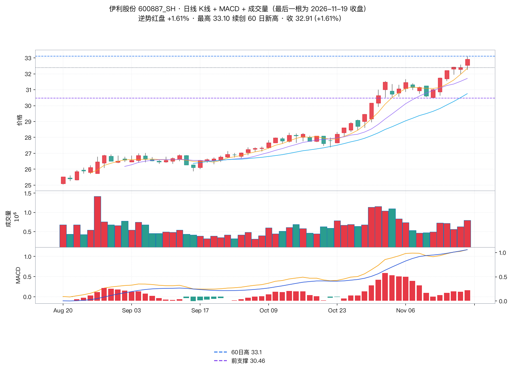
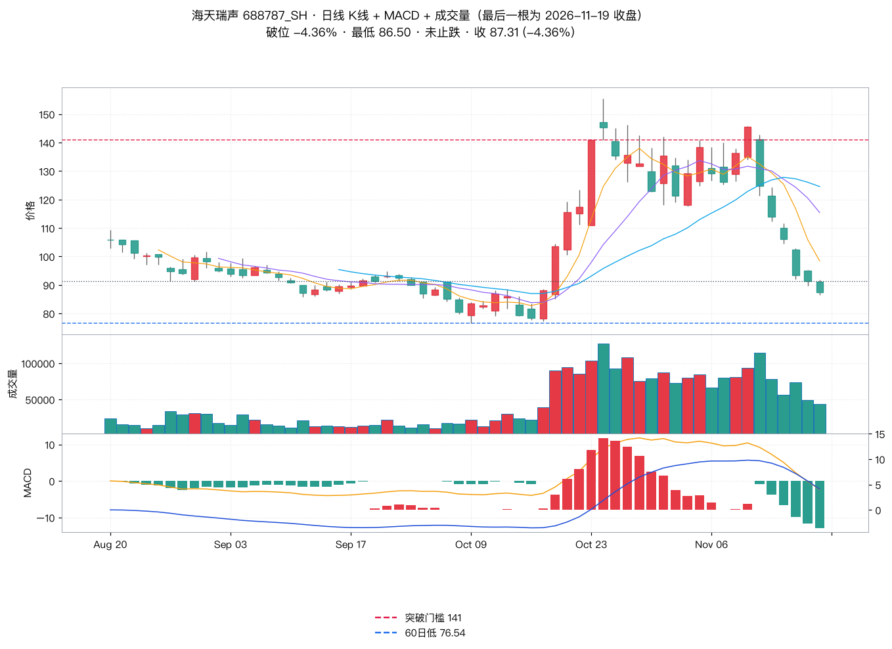
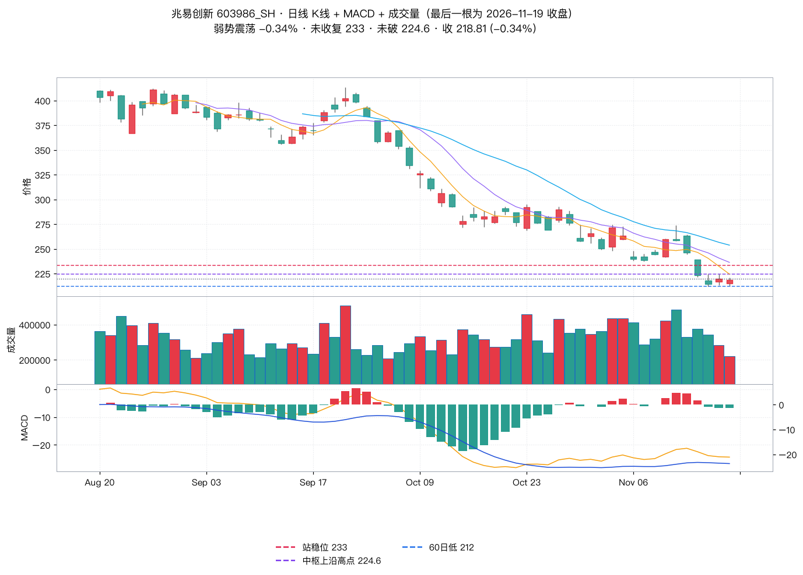
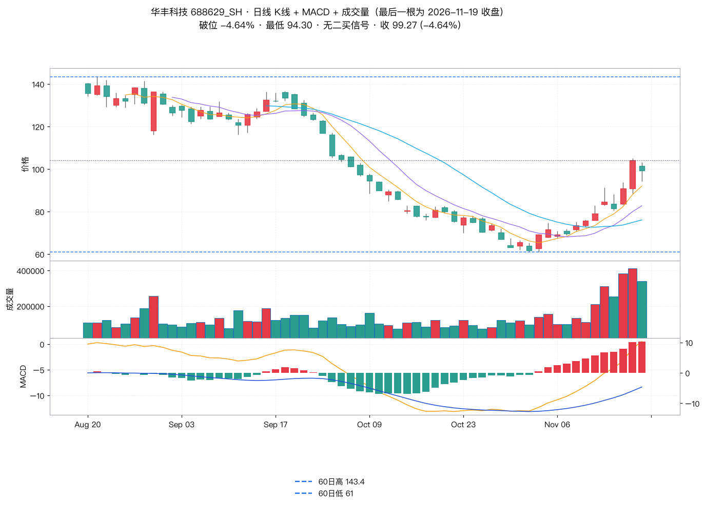
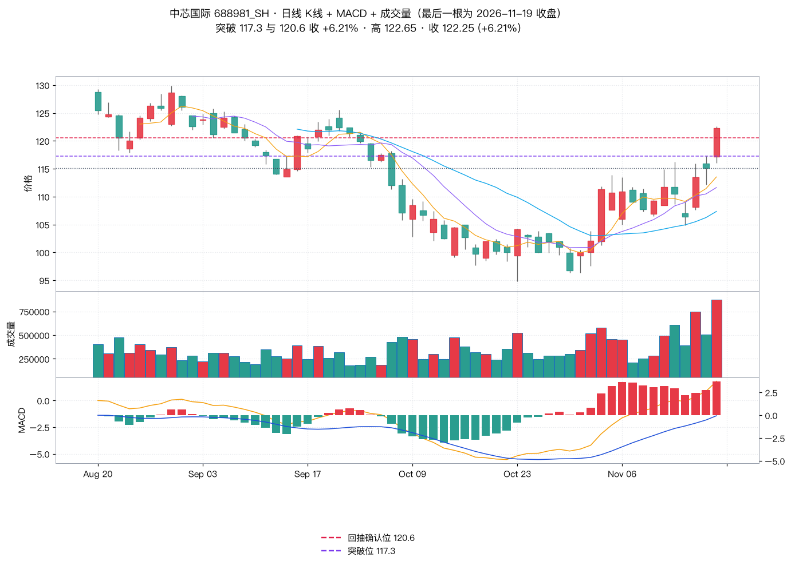
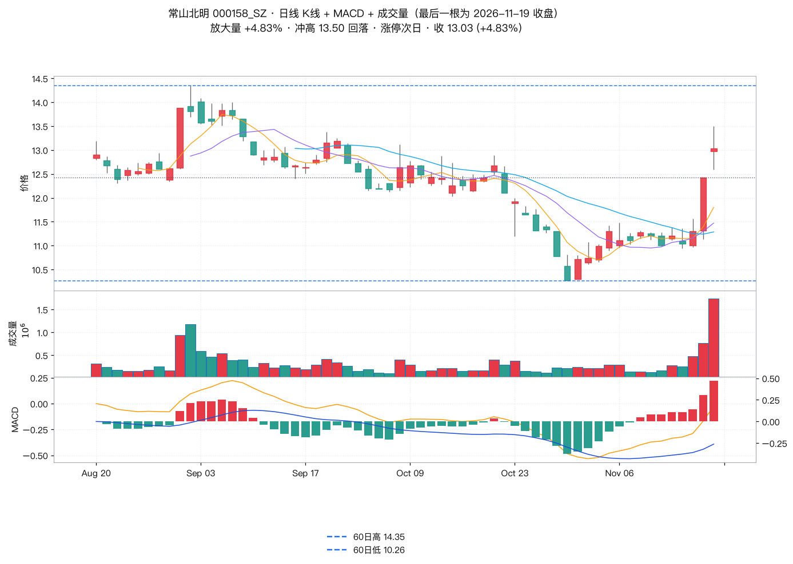
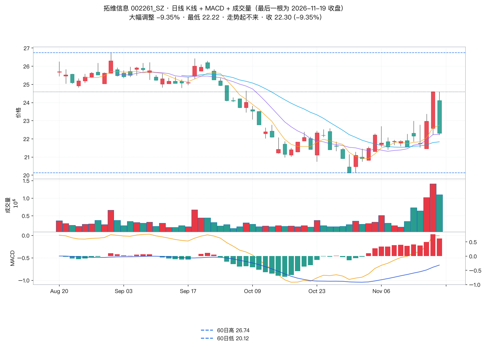
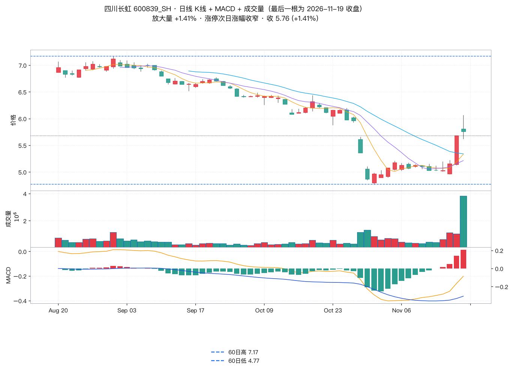
| 老师原文 | 实测 | 判定 |
|---|---|---|
| 「各大指数均出现下跌」 | 科创50 +1.83%、沪深300 +0.03% 逆势红 | 部分不成立 |
| 「深成指向下破的幅度很浅」 | 深成指最低 10505.84 = 60 日新低 | 日线看偏深 |
| 「二类热点：国产算力」 | 篮子 -3.01%（3 涨 4 跌）、算力租赁 -7.39% | 当日未兑现 |
| 「药明康德 15 分钟窄幅震荡向下有破位迹象」 | 日线低 140.87 > 昨低 139.75，且收在全天最高 | 日线未破位 |
| 「中芯 120.6 突破回抽，下午也没满足」 | 收 122.25 已站稳 120.6（高 122.65） | 回抽待 11/20 验证 |
其余判据当日一致：创业板未创新低 ✓、3623 未触及 ✓、常山北明与四川长虹放大量 ✓、拓维信息大幅调整 ✓、前期强势股补跌 ✓、红利分化 ✓。
来源：都业华《高级班》2026-11-19 收评，执业编号 A0400626100004。仅供参考，不作为买卖依据，据此操作风险自担。投资有风险，入市需谨慎！
口径：Tushare 日线（前复权，个股 adj_factor 基准取最新日）+ 新浪收盘快照交叉校验（11 只标的两源收盘价全部一致）；全市场涨跌家数/成交额/涨跌停取 Tushare daily 全量 5573 只；涨停/跌停/炸板池取东财 push2ex（涨停 23、跌停 68、炸板 24）；板块为自建篮子均值（成分逐一列出）。缠论定性按老师口径引用，不声称我方复算过 15 分钟结构；关键位一律用日线触达判据（当日最高/最低 vs 关键位）。